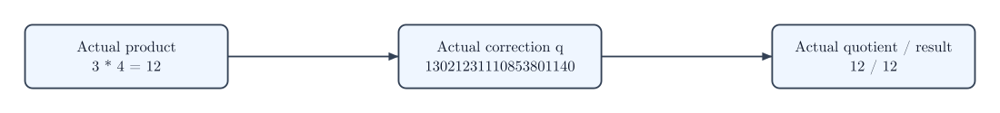
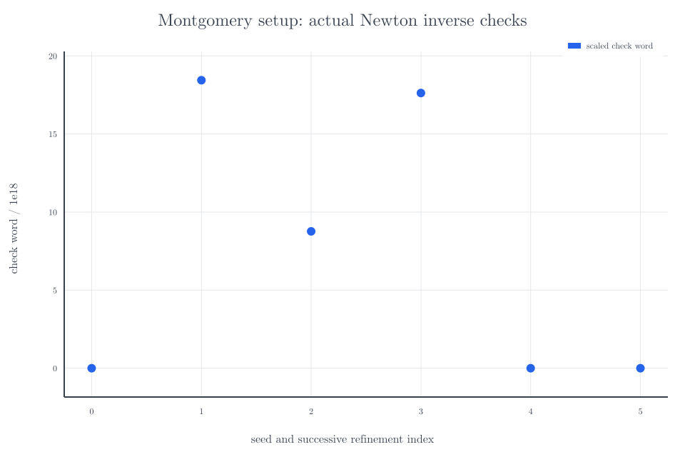
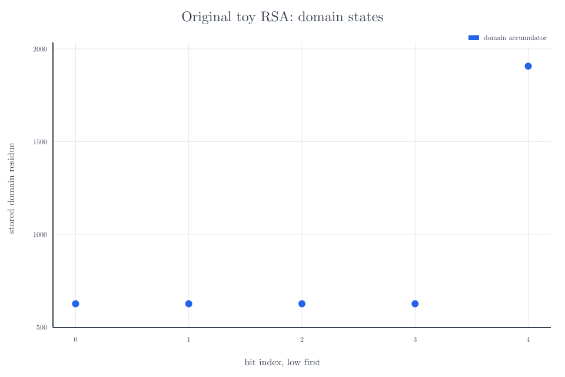
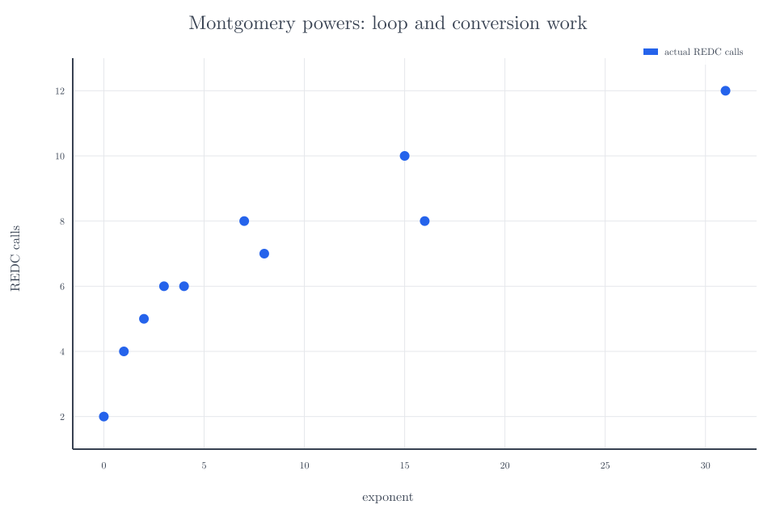

Montgomery arithmetic
Abstract
Repeated products modulo a fixed odd integer can spend substantial work on reductions. Montgomery arithmetic changes representation so its reduced-domain product uses multiplication, addition and shifts. We derive the reduction, observe the actual carry that a full-width sum needs, retain the original arithmetic and toy RSA examples, and count real domain conversions separately from the binary powering loop.
Derive reduction before using it
Let R=2 to power64 and n be odd. Precompute nprime=−n inverse modulo R. For T=a*b with both factors less than n, define q as the low64 bits of T times nprime. Then T+q*n is divisible by R. Its quotient u is less than2n because T<n squared<nR and q<R. Thus subtracting n at most once gives a canonical residue congruent to T times R inverse modulo n.
The sum can require129 bits even though each product fits128. The canonical kernel retains the carry from the unsigned128-bit addition separately. If it is set, the quotient is R plus its stored low64 bits and the final subtraction is required. Unsigned subtraction of n then gives the correct result below n, including this carry case. Discarding that bit before comparison was a full-width defect in the legacy routine.
A small actual reduction
Modulo17, R is congruent to1, so a REDC product of3 and4 is12. The diagram reads the producer's actual product, correction and final residue. This convenient modulus makes the arithmetic hand-checkable; the representation change is nontrivial for most other moduli.
#include <dm/dm.hpp>
int main() {
std::filesystem::create_directories("build");
dm::algorithms::MontgomeryContext c(17);
auto t = c.reduce_trace(3, 4);
dm::graphics::Diagram d;
std::print("| n | nprime | product high | product low | q | carry | quotient low | subtract | result " "|\n| ---: | ---: | ---: | ---: | ---: | --- | ---: | --- | ---: |\n| {} | {} | {} | {} | {} " "| {} | {} | {} | {} |\n",
c.modulus(), c.nprime(), t.product_high, t.product_low,
t.correction, t.sum_carry, t.quotient_low, t.subtracted, t.result);
d.node("a", {0, 0},
std::format("Actual product\n{} * {} = {}", t.left, t.right,
t.product_low)).node("b", {7, 0},
std::format("Actual correction q\n{}",
t.correction)).node(
"c", {14, 0},
std::format("Actual quotient / result\n{} / {}", t.quotient_low,
t.result)).edge("a", "b").edge("b", "c");
d.save_svg("build/montgomery_tiny.svg");
}| n | nprime | product high | product low | q | carry | quotient low | subtract | result |
|---|---|---|---|---|---|---|---|---|
| 17 | 1085102592571150095 | 0 | 12 | 13021231110853801140 | false | 12 | false | 12 |

Setup once and keep the loop in its domain
Represent x by xR modulo n. Multiplying two representations with REDC yields xyR, so repeated operations stay in the same domain. Enter with REDC((x modulo n)*(R squared modulo n)); leave with REDC(xR*1). The context stores nprime, R modulo n and R squared modulo n. Setup and reduction of arbitrary inputs use remainder operations. Consequently the historical convenience function, which constructs a fresh context for every ordinary product, does not avoid division over the whole call.
For odd n, n squared is1 modulo8. Starting the inverse iteration at n therefore gives at least three correct bits. Each Newton update v←v(2−nv) doubles the number, so five updates suffice for64 bits. The figure displays check words in units of1e18; its table retains exact integers. The next program displays actual setup iterates for the original modulus3233 and performs the original two ordinary products. Counts of low-level CPU instructions are deliberately not inferred from these abstract operations.
#include <dm/dm.hpp>
int main() {
std::filesystem::create_directories("build");
dm::algorithms::MontgomeryContext c(3233);
std::vector<double> x, y;
auto v = c.inverse_steps();
std::print("| actual Newton stage | inverse word | n times inverse modulo R |\n| ---: | ---: | ---: " "|\n");
for (std::size_t k = 0; k < v.size(); ++k) {
auto check = std::uint64_t(c.modulus() * v[k]);
std::print("| {} | {} | {} |\n", k, v[k], check);
x.push_back(k);
y.push_back(double(check) / 1e18);
}
std::print("\nOriginal products: {}, {}.\n",
dm::algorithms::montgomery_multiply(123, 456, 1000003),
dm::algorithms::montgomery_multiply(9999, 8888, 100000007));
auto p = dm::graphics::RPlot::create();
p.points(x, y, "scaled check word", {37, 99, 235}, 6).title(
"Montgomery setup: actual Newton inverse checks").x_label(
"seed and successive refinement index").y_label("check word / 1e18").save_svg("build/montgomery_setup.svg");
}| actual Newton stage | inverse word | n times inverse modulo R |
|---|---|---|
| 0 | 3233 | 10452289 |
| 1 | 18446744039917307745 | 18446634823385116673 |
| 2 | 7072156255688644449 | 8765267315253051393 |
| 3 | 12934719727340672865 | 17626807466551410689 |
| 4 | 8809703943646009185 | 1 |
| 5 | 8809703943646009185 | 1 |
Original products: 56088, 88871112.

Retain the original toy RSA calculation
The original arithmetic example uses p=61, q=53, n=3233, e=17 and d=2753. Encrypting123 gives855 and powering855 to2753 returns123. Here one context is reused and each full power enters and leaves the Montgomery domain only once. The trace reports domain residues, which must not be read as ordinary residues. This tiny unpadded calculation illustrates modular arithmetic and provides no secure encryption scheme.
#include <dm/dm.hpp>
int main() {
std::filesystem::create_directories("build");
dm::algorithms::MontgomeryContext c(3233);
auto t = c.power_trace(123, 17);
auto back = c.power(t.result, 2753);
std::vector<double> x, y;
std::print("Ciphertext: {}. Recovered message: {}. Actual REDC calls for encryption: {}.\n\n| bit | " "remaining | running domain residue | accumulator domain residue | squared domain residue " "|\n| ---: | ---: | ---: | ---: | ---: |\n",
t.result, back, t.reductions);
for (std::size_t k = 0; k < t.steps.size(); ++k) {
auto &s = t.steps[k];
x.push_back(k);
y.push_back(s.accumulator_after);
std::print("| {} | {} | {} | {} | {} |\n", k, s.remaining, s.running,
s.accumulator_after, s.squared);
}
auto p = dm::graphics::RPlot::create();
p.points(x, y, "domain accumulator", {37, 99, 235}, 6).title(
"Original toy RSA: domain states").x_label("bit index, low first").y_label("stored domain residue").save_svg("build/montgomery_rsa.svg");
}Ciphertext: 855. Recovered message: 123. Actual REDC calls for encryption: 9.
| bit | remaining | running domain residue | accumulator domain residue | squared domain residue |
|---|---|---|---|---|
| 0 | 17 | 626 | 626 | 2639 |
| 1 | 8 | 2639 | 626 | 1114 |
| 2 | 4 | 1114 | 626 | 1053 |
| 3 | 2 | 1053 | 626 | 1724 |
| 4 | 1 | 1724 | 1907 | 77 |

Full-width carry and exact work counts
For n=R−1 and reduced factors n−1, the exact REDC quotient before subtraction is R. Its low64 bits are zero and its129th sum bit is set. The correct result is1. This is a targeted boundary case where discarding the carry would return zero. The table records that native event directly.
For n greater than1 and exponent e, the shared powering kernel makes two conversion REDCs, L squares and H accumulator REDCs, where L is bit width and H population count. It retains the final unused square. Thus total REDCs are2+L+H, even at exponent zero where the two conversions remain. Modulus one is a zero-result shortcut with no REDCs. This count is a word-operation model, not a runtime comparison against division-based arithmetic.
#include <dm/dm.hpp>
int main() {
std::filesystem::create_directories("build");
auto n = std::numeric_limits<std::uint64_t>::max();
dm::algorithms::MontgomeryContext full(n);
auto t = full.reduce_trace(n - 1, n - 1);
std::print("| modulus | reduced factor | carry | quotient low | subtracted | REDC result | ordinary " "product |\n| ---: | ---: | --- | ---: | --- | ---: | ---: |\n| {} | {} | {} | {} | {} | {} " "| {} |\n",
n, n - 1, t.sum_carry, t.quotient_low, t.subtracted, t.result,
full.multiply(n - 1, n - 1));
std::vector<double> x, y;
dm::algorithms::MontgomeryContext c(3233);
std::print("\n| exponent | actual bit records | actual REDC calls | ordinary residue |\n| ---: | ---: | " "---: | ---: |\n");
for (std::uint64_t e : {0ULL, 1ULL, 2ULL, 3ULL, 4ULL, 7ULL, 8ULL, 15ULL,
16ULL, 31ULL}) {
auto p = c.power_trace(123, e);
x.push_back(e);
y.push_back(p.reductions);
std::print("| {} | {} | {} | {} |\n", e, p.steps.size(), p.reductions,
p.result);
}
auto p = dm::graphics::RPlot::create();
p.points(x, y, "actual REDC calls", {37, 99, 235}, 6).title(
"Montgomery powers: loop and conversion work").x_label("exponent").y_label("REDC calls").save_svg("build/montgomery_work.svg");
}| modulus | reduced factor | carry | quotient low | subtracted | REDC result | ordinary product |
|---|---|---|---|---|---|---|
| 18446744073709551615 | 18446744073709551614 | true | 0 | true | 1 | 1 |
| exponent | actual bit records | actual REDC calls | ordinary residue |
|---|---|---|---|
| 0 | 0 | 2 | 1 |
| 1 | 1 | 4 | 123 |
| 2 | 2 | 5 | 2197 |
| 3 | 2 | 6 | 1892 |
| 4 | 3 | 6 | 3173 |
| 7 | 3 | 8 | 2868 |
| 8 | 4 | 7 | 367 |
| 15 | 4 | 10 | 1831 |
| 16 | 5 | 8 | 2136 |
| 31 | 5 | 12 | 2319 |

Contracts and conclusion
The context accepts odd nonzero moduli, including one, and rejects zero or even moduli before setup arithmetic. Ordinary multiply and power accept arbitrary unsigned64-bit inputs; raw REDC methods require operands strictly below the modulus. Trace capture owns its results. Power traces check complete effective bit width against their default64-record cap before powering; zero disables the cap. Context setup and raw products have constant fixed-word work/storage, ordinary powering uses O(log exponent+1) operations and constant driver storage, and its history adds O(log exponent+1) records.
The examples show the representation change, real setup costs, real conversion costs and the full-width carry. They establish no CPU speed ratio or constant-time guarantee. Secret-dependent branches, raw arithmetic and the tiny RSA parameters require no interpretation as production cryptography.
Montgomery, Modular multiplication without trial division (1985) supplies the reduction method. The explicit129-bit carry handling and context capture contract describe this implementation.
Verification
The ten-report batch passes95 CTest cases,31 directly instrumented ASan/UBSan
cases,83 compiled and executed public examples,363/363 scoped documentation
definitions and ten representative hovers. Independent Python integer
arithmetic, MT19937-64/variation replay, graph sets, analytic interpolation,
circle boundary enumeration and actual-sample integration reconstruction agree
on915459 captured records. All six original RMS summaries are separately checked
using96 native MISER estimates and1600000 independently reproduced
plain-comparator points. Frozen valid-input comparisons include the original
seeded solver paths and full MOEA/D fronts. Ten checkout headers and ten
identically installed development headers compile independently, and an
installed-header native consumer links and runs. Each report has four executed
complete programs, four reviewed native figures and both HTML/Markdown exports
with computed-result and image-byte checks. This is a scoped native API audit,
not an installation claim for every language binding. Receipts:
build/mepml-conversion/batch-234-243/.